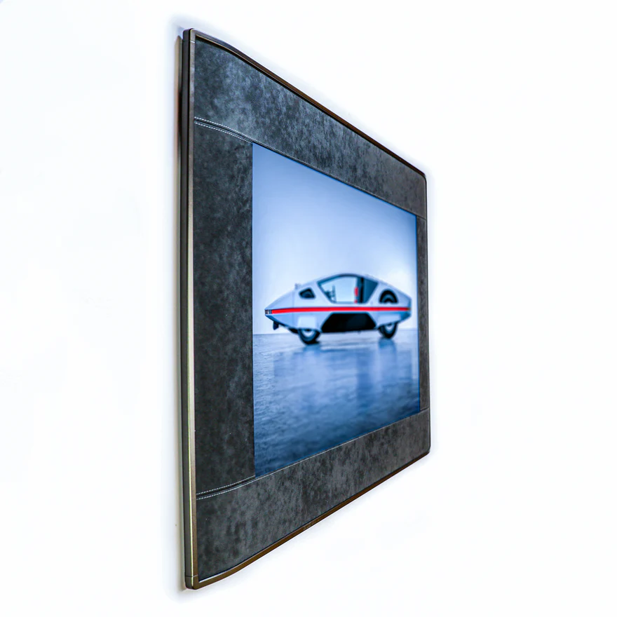
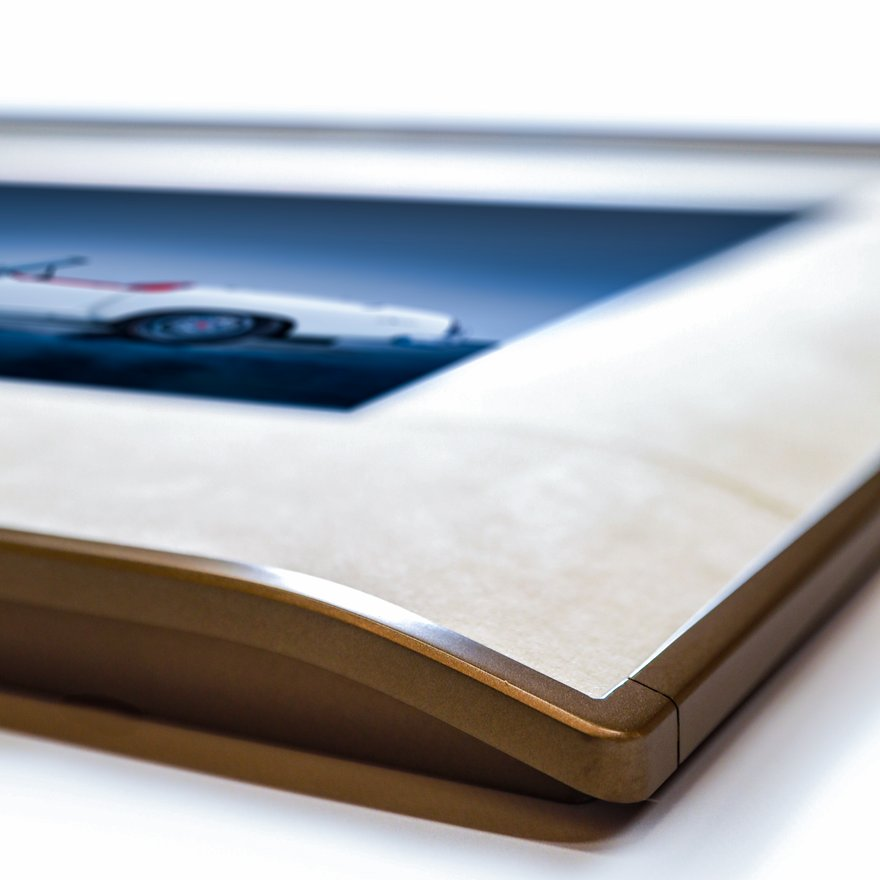

Short answer
An E-Ink picture frame is a digital frame that uses a reflective electrophoretic display instead of a backlit LCD. It can keep a still image visible without powering the display panel, so it behaves more like a changeable print than a small television. The best fit is artwork, photography, and calm information that changes occasionally. It is not the right display for video, rapid slideshows, or maximum color saturation.
What is an E-Ink picture frame?
An E-Ink picture frame, also written as an e-ink or ePaper frame, combines a traditional frame body with an electronic paper display, a controller, wireless connectivity, a battery or power input, and software for managing images. Unlike an LCD photo frame, the display is not continuously emitting light.
The result is a screen optimized for still content. It can hang without a permanent power cable, remain readable in a bright room, and darken naturally when the room gets dark. Frame materials, matboard, surface finish, and image processing all contribute to whether the result feels like a framed print.
How is it different from a normal digital photo frame?
The practical differences are light, power, and pace. E-Paper reflects ambient light, the panel needs energy mainly when an image changes, and color refreshes take longer. LCD frames emit light, draw power while operating, and are better for frequent slideshows or motion.
How does an E-Ink picture frame work?
Electrophoretic displays move charged pigment particles through an electric field to form an image. Once the particles are in place, the display is bistable: unchanged pixels do not need continuous power. The frame's controller, Wi-Fi radio, sensors, and other electronics may still use standby power.
E Ink's technology overview explains how charged particles move within microcapsules or microcups. Spectra 6 uses a four-particle ink system plus a color-imaging algorithm to create full-color output for paper-sign replacement, signage, and poster applications.

How fast does the image change?
Refresh time varies by panel, waveform, temperature, controller, and image-quality setting. High-quality color updates on picture-frame products usually take seconds, not milliseconds. That is suitable for art that changes a few times a day, but not for video. E Ink also notes that frequent updates reduce the power-efficiency advantage of the technology.
Why does E-Ink look more like paper?
It is reflective rather than emissive. Ambient light reaches the pigment surface and returns to the viewer, while an LCD uses a backlight. This changes how the frame behaves in a room:
- No backlight glow. The frame does not become a bright rectangle at night.
- Bright-room readability. Reflective displays remain readable under strong ambient light without increasing backlight brightness.
- Wide viewing angles. The image remains visible when viewed from the side.
- Matte presentation. A low-glare surface, real matboard, and a suitable frame body can reinforce the print-like effect.
Reflective does not mean indestructible or glare-free. Surface reflections still depend on the front layer, and prolonged direct sun can heat or fade surrounding frame materials. Follow the finished product's placement guidance and operating-temperature limits; E Ink lists 0–50°C for Spectra 6 modules.

What can you display on an E-Ink frame?
Any still image that can be prepared for the panel's palette: personal photography, licensed or public-domain art, brand content, calendars, menus, room information, and scheduled visual messages.
- Personal images. A mobile or web workflow uploads and crops the image before the rendering pipeline maps it to the panel.
- Curated artwork. Content rights and attribution should be clear, especially in hotels, galleries, retail, and other commercial spaces.
- Managed information. A content platform can schedule a low-frequency update across one frame or an entire group of displays.
The rendering pipeline matters because a source image created for an LCD must be adapted to a reflective display's available pigments and contrast. Ask a supplier to render one of your own images before evaluating color quality.
E-Ink picture frame vs LCD photo frame vs printed frame
Choose E-Ink for calm, changeable still content; LCD for motion and saturated slideshows; print for a permanent image.
| Decision point | E-Ink picture frame | LCD photo frame | Framed print |
|---|---|---|---|
| Light | Reflective, no backlight | Backlit and emissive | Reflective |
| Power | Panel uses power mainly to update; system standby varies | Draws power while operating | None |
| Placement | Battery designs can be cable-free | Usually near an outlet | Anywhere suitable for the materials |
| Motion | Still images; slow color refresh | Slideshows and video | None |
| Color character | Soft, matte, print-like | Bright and saturated | Depends on print process |
| Content changes | Remote, occasional | Remote, frequent | Manual replacement |
Technology basis: E Ink, Electronic Ink: How It Works. Finished-product behavior varies by implementation.
What are the honest downsides?
Current color E-Ink frames cannot match an LCD's refresh speed or peak saturation, and larger panels carry a meaningful price premium. Buyers should also check the content app, offline behavior, update reliability, battery assumptions, warranty, and subscription terms rather than judging the panel alone.
For commercial-space trade-offs, read Color E-Ink vs LCD digital signage.
What sizes do E-Ink picture frames come in?
Current Spectra 6 modules span desk-scale products through large wall displays. The sizes below are panel modules; not every size is available as a finished frame from every supplier.
| Panel size | Typical frame role | Common placement |
|---|---|---|
| 7.3″ / 8.14″ | Desk or shelf frame | Office, bedside, gifting |
| 13.3″ | Small wall-art frame | Gallery wall, hallway, meeting room |
| 25.3″ | Mid-size wall content | Living room, hospitality, retail |
| 31.5″ | Large poster or statement frame | Lobby, gallery, branded space |
Source: E Ink Online Shop, Spectra modules, accessed July 10, 2026. The listing also includes a 4-inch module.
How long does the battery last?
A well-designed E-Ink frame can target months between charges, but the display technology alone does not determine battery life. Capacity, refresh frequency, Wi-Fi wake-ups, cloud polling, temperature, sensors, and software all matter. A vendor estimate is useful only when it states the image-change schedule and connectivity assumptions.
What should buyers ask?
- How many updates per day were used for the quoted battery estimate?
- Does the device poll continuously or wake on a schedule?
- What happens when Wi-Fi is unavailable?
- How is the battery charged, serviced, and covered under warranty?
Is ePaper a growing display category?
Yes, although market estimates differ substantially because research firms define the category and forecast period differently. The responsible takeaway is continued growth across e-readers, electronic shelf labels, signage, and connected displays—not a single precise headline number.
| Research publisher | 2026 estimate | Published forecast |
|---|---|---|
| The Business Research Company | $7.56B | $22.44B in 2030; 31.3% forecast CAGR |
| Global Market Insights | $4.4B | $18B in 2035; 17% CAGR for 2026–2035 |
Sources: The Business Research Company, E-Paper Display Global Market Report 2026; Global Market Insights, Electronic Paper Display Market 2026–2035. Estimates are not directly comparable because scopes and methodologies differ.
How to choose an E-Ink picture frame
Use this checklist when evaluating a consumer frame, a commercial deployment, or an OEM partner:
- Confirm the exact panel. Ask for the generation, size, resolution, contrast, and operating-temperature range.
- Test your own content. Judge skin tones, gradients, shadow detail, text, and brand colors after the supplier's rendering process.
- Inspect the frame as furniture. Look at materials, matboard, depth, mounting, cable strategy, and service access.
- Review the content workflow. Check uploads, scheduling, fleet control, permissions, offline behavior, and content rights.
- Compare battery claims fairly. Require the update frequency and network assumptions behind each estimate.
- Read the commercial terms. Confirm warranty, software support, subscriptions, APIs, spare parts, and replacement policy.
What is inside a complete E-Ink frame system?
A useful frame is three products working together: a display device, a physical frame, and a content service.
- Display device: panel, controller, memory, power management, battery or power supply, and connectivity.
- Physical frame: enclosure, matboard, protective front layer, hanging system, thermal design, and service access.
- Content service: image preparation, dithering, color mapping, rights management, scheduling, monitoring, and fleet administration.
Most day-to-day differences appear in the last two layers. That is why einksmart approaches color E-Ink as a managed content platform, supported by rendering and device technology, rather than as a panel-only product.
FAQ
Does an E-Ink picture frame need Wi-Fi?
Usually only to download or schedule new content. The current image remains visible without Wi-Fi, although the controller and connectivity can still use standby power.
How long does the battery last?
It depends on capacity, refresh frequency, wireless behavior, temperature, and software. Many products target months, but compare estimates only when their test conditions are stated.
Can it show color photos?
Yes. Current color ePaper can show photography and art with a reflective, matte character. Expect softer color than a backlit LCD and ask to see your own image rendered.
Can it play video or animations?
Current production color frames are designed for still images. High-quality color refreshes are too slow for normal video, and frequent updates reduce the power advantage.
Is it safe in direct sunlight?
The display is readable in bright ambient light, but prolonged direct sun can add heat and affect surrounding frame materials. Follow the finished product's temperature and placement guidance.
Is it better than an LCD photo frame?
It is better for cable-free, non-glowing, occasionally changing still content. LCD is better for rapid slideshows, video, and high saturation.
Next step

Color E-Ink vs LCD digital signage: when calm screens win
Compare display behavior, operating cost, and content workflows for commercial spaces.
Read Insight
Rendering and device technology
How einksmart prepares images for reflective color panels, from dithering to device control.
Review Technology
Hotel lobby content wall scenario playbook
A transparent pilot blueprint for replacing printed posters in a hospitality lobby.
View Playbook